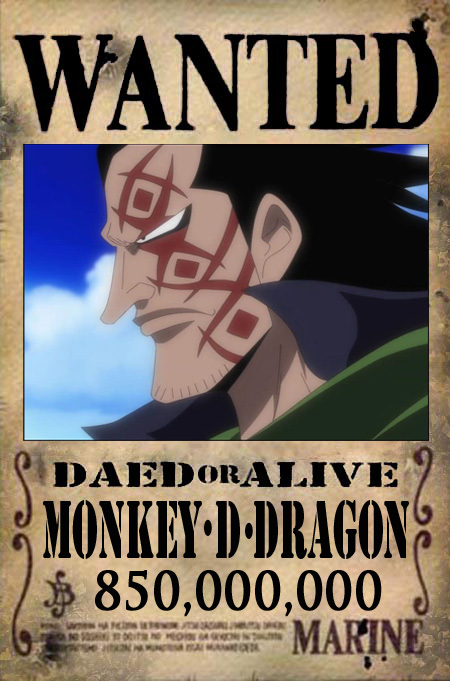

El One Existe
es el legendario tesoro de un valor incalculable que resulta ser la suma del objeto que alguien dejó hace siglos y los tesoros del Rey de los Piratas Gol D. Roger.[2] Antes de su ejecución, Roger dijo al mundo que el gran tesoro podría ser reclamado por quien consiguiese llegar hasta allí, dando comienzo así a la «Gran Era de los Piratas
Fue escondido en la isla más profunda de Grand Line, la última isla, posteriormente llamada Laugh Tale por el mismo Roger. Al menos una parte de él fue dejado por Joy Boy bajo circunstancias y fines desconocidos allí durante el Siglo Vacío
El Nuevo Mundo es el lugar donde se encuentra la isla de Laugh Tale, conocida como la última isla de Grand Line. Se rumorea que es allí donde se encuentran el legendario tesoro del Rey de los Piratas, Gol D. Roger, el One Piece, y la verdadera historia que se encuentra en el rio poneglyph.
MONKEY D DRAGON: El Revolucionario
Es el líder pirata de la armada revolucionaria, lo que lo hace el mayor enemigo del Gobierno Mundial, siendo por ello catalogado como el criminal más buscado del mundo.
Es visto mayormente con una larga túnica verde. En su rostro tiene pintados una clase de tatuajes tribales, su cabello es negro y largo. Es casi siempre visto sonriendo misteriosamente. Cabe destacar que se vio el rostro de Dragón en la ejecución de Gol D. Roger hace 20 años y no usaba sus característicos tatuajes rojos, sin embargo 10 años atrás del inicio de la serie se puede ver que si los tiene, por lo que se puede deducir que si esos tatuajes son por algún acontecimiento en especial este sucedió entre 10 a 20 años atrás.
El odia el comportamiento del Gobierno Mundial y algunas Clases Altas hacia el resto del mundo; cuando conoció a Sabo, este estaba en el suelo llorando y Dragon se inclinó a preguntar qué le sucedía al pequeño mostrándose indignado por lo que hizo la realeza con la destrucción del Gray Terminal y la gente que vivía allí sorprendiéndose de la maldad mostrada por la realeza para que uno de sus descendientes mostrara tal actitud de desprecio al haber nacido noble.
Nico Robin señaló que Dragon es una persona amable, y esto concuerda con las acciones de este, ya que él se preocupó por salvar a todas las personas del incendio que devoró Gray Terminal. Además, por sus palabras, no es del tipo de persona que busca poder para su beneficio propio, si no para cambiar el mundo y terminar la tiranía del sistema monárquico.
Aunque generalmente tiene una expresión enigmática y tranquila, es visto cuando rescató a Sabo del agua, se sorprendió de que tuviera tantas heridas y puso un semblante que demostraba una gran furia.